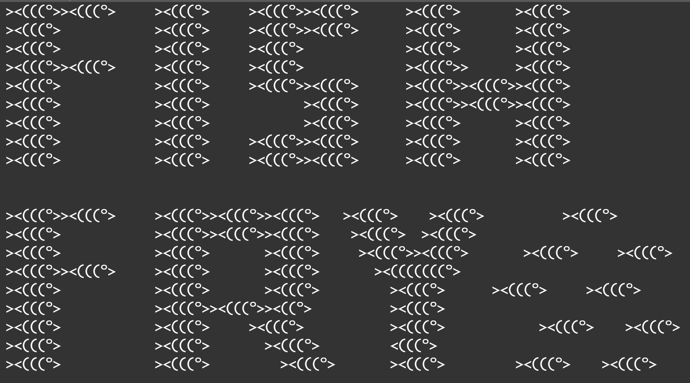

Home
Gallery
About
Resume
Fish-Fry Website (Portfolio)

ASCII Art used as the logo for my personal Git-Hub Repo "Fish-Fry" Click
HERE
to visit the repo
Click on an image to get more info and photos of the category!
PSB Theatre Department
Meehl Innovation Commons
Club Involvement
Coursework